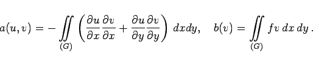

Inhalt Index DeskTop Bronstein

 Numerische Mathematik Genäherte Integration von partiellen Differentialgleichungen Methode der finiten Elemente (FEM)
Numerische Mathematik Genäherte Integration von partiellen Differentialgleichungen Methode der finiten Elemente (FEM)


Zu der vorgegebenen Randwertaufgabe ist eine Variationsaufgabe zu formulieren. Die Vorgehensweise wird an der Randwertaufgabe
gezeigt. Multipliziert man die Differentialgleichung in (19.143) mit einer hinreichend glatten Funktion , die auf dem Rand von G verschwindet, und integriert man anschließend über  , dann erhält man
, dann erhält man
Durch Anwendung der GAUSSschen Integralformel, indem man P(x,y) = -vuy und Q(x,y) = vux setzt, erhält man aus (19.144) die Variationsgleichung
|  | (19.145b) |